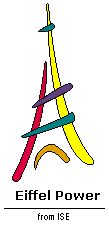
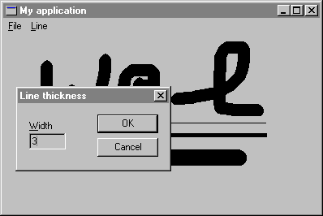

Windows Eiffel Library (WEL) Tutorial
Also of interest: an overview of WEL design principles.
Overview
The Windows Eiffel Library (WEL) has been designed to make Windows programming easier, more reliable, more convenient, and more powerful by using Eiffel principles. The most obvious definition of WEL is that it is an encapsulation of Windows primitives, making it possible for users of ISE's Graphical Eiffel for Windows to have direct access to the Windows graphical API.
This tutorial requires some knowledge of the Eiffel language, EiffelBase (the basic libraries) and EiffelBench (the graphical Programming Environment). Knowledge of the Windows Software Developers Kit will be helpful but not necessary.
In the upcoming chapters, you will build a graphical, interactive Windows program, complete with menus, file saving and loading, graphic and text drawing. On the way, you will be introduced to the major principles of Windows application design, such as message processing, managing a device context, using dialog boxes, and automatic graphics redrawing.
This walk-through consists of eight steps:
- Step 1: Creating an application
- Step 2: Defining a main window class
- Step 3: Drawing text in a window
- Step 4: Drawing lines in a window
- Step 5: Changing line thickness
- Step 6: Repainting a window
- Step 7: Adding a menu
- Step 8: Storing the drawing in a file
Figure 1 shows the application you will have created at the end of this manual.
Figure 1

The source code for the application is provided in progressive versions as part of the Eiffel delivery. The directories in $EIFFEL5\EXAMPLES\WEL\TUTORIAL are named STEP1, STEP2 and so on, corresponding to the steps in the tutorial.